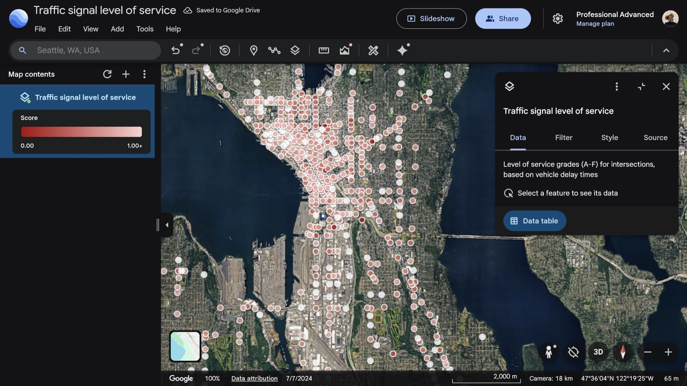
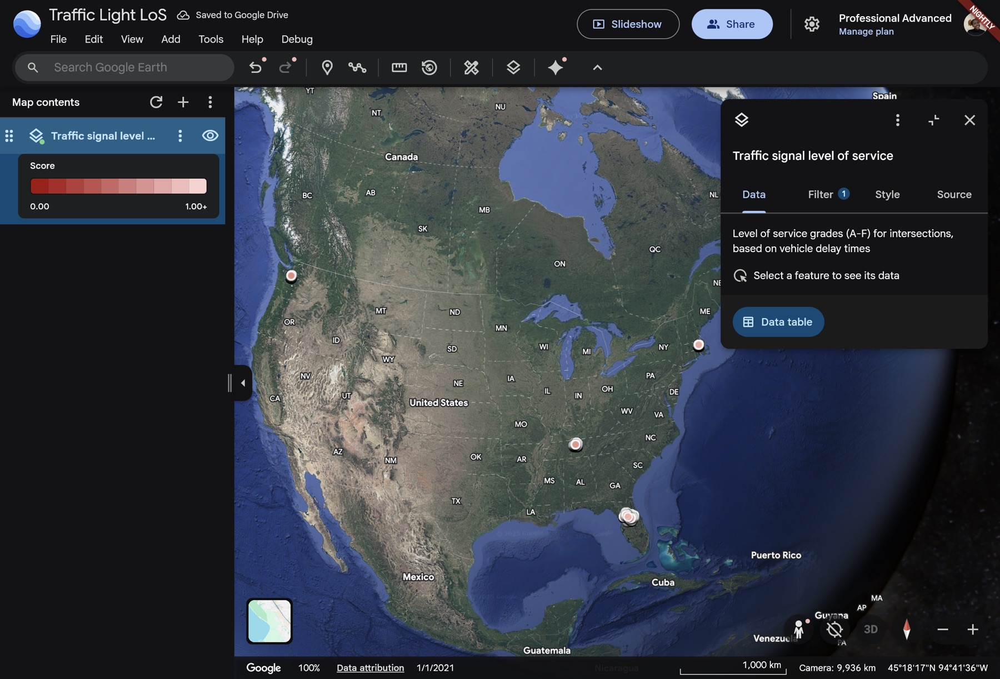
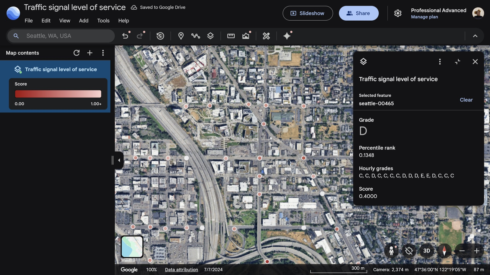
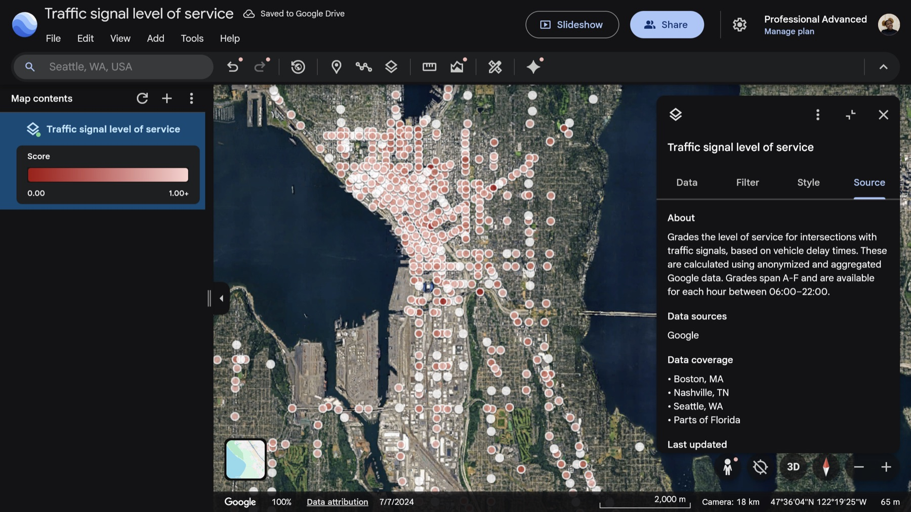
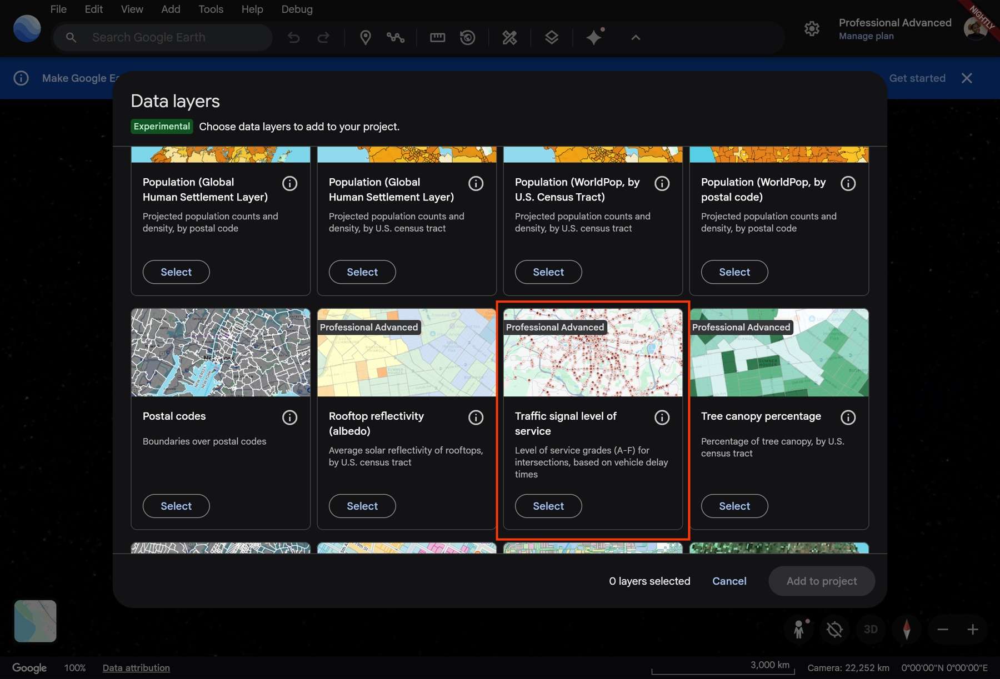

03Google Earth · 2025 · Data product, UI
Traffic signal level of service
Google Research measured how long cars wait at traffic lights. I turned that research into an A–F grade for every signalized intersection, hour by hour.

01The data
The research was rigorous and the numbers were hard to read. The job was to make them something a traffic engineer or planner could act on in seconds.



02What I did
- Designed the A–F grading so a dense dataset reads at a glance.
- Added an hour-by-hour view from 06:00 to 22:00, so planners can watch congestion move through the day.
- Got everyone to yes. I sat between the research scientists and product engineering to agree on a visualization that was accurate and easy to read.


03Result
470+paying professional users
10%conversion in the first two weeks
It also set the template for bringing more Google research into Earth as data layers, including inundation history, where I did the first designs.
Next project
Solar layouts for real roofs

Say hello.
Working on something for the built environment? I’d love to hear about it.
© 2026 Shakira “Tola” OniyangiBack to top ↑